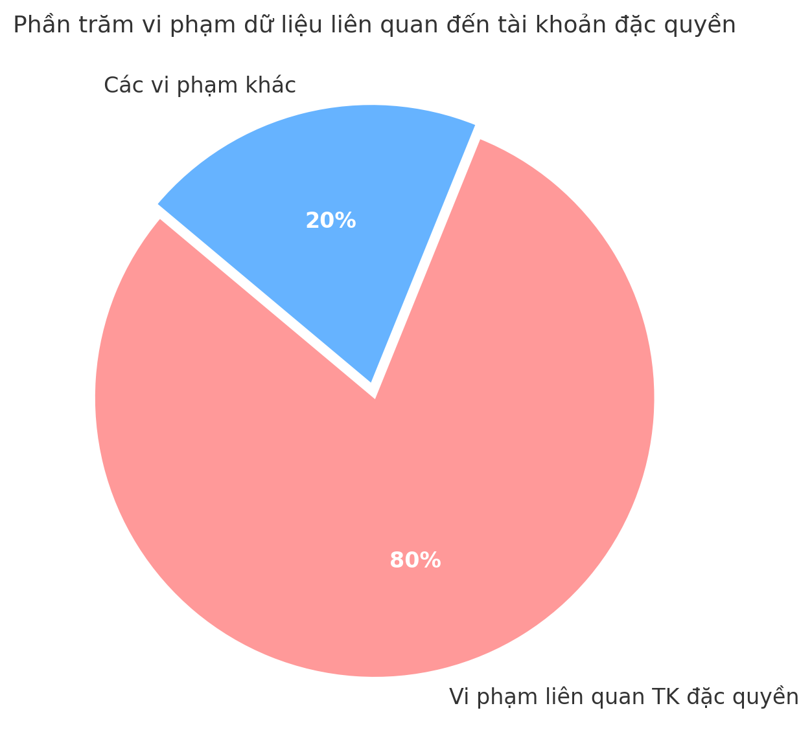

Hệ thống PAM và sự cần thiết trong doanh nghiệp hiện đại
1. PAM là gì và vì sao nó quan trọng?
PAM (Privileged Access Management) – Quản lý truy cập đặc quyền – là tập hợp các giải pháp và quy trình nhằm kiểm soát các tài khoản có quyền hạn cao trong hệ thống CNTT. Nói cách khác, PAM giúp doanh nghiệp quản lý ai có quyền truy cập cao nhất (ví dụ: admin, root) và theo dõi họ làm gì khi sử dụng những quyền đó. Mục tiêu là thu hẹp “bề mặt tấn công” của hệ thống bằng cách đảm bảo người dùng chỉ có quyền tối thiểu cần thiết, từ đó giảm thiểu rủi ro từ cả tấn công bên ngoài lẫn đe dọa nội bộ.
Tại sao PAM lại quan trọng? Hãy hình dung tài khoản quản trị hệ thống như “chìa khóa vạn năng” mở cửa toàn bộ dữ liệu quan trọng của doanh nghiệp. Nếu những chìa khóa này rơi vào tay kẻ xấu, hậu quả sẽ rất nghiêm trọng – kẻ tấn công có thể đánh cắp dữ liệu, phá hoại hệ thống, cài malware hoặc tống tiền. Thống kê cho thấy có tới 80% vi phạm bảo mật liên quan đến việc lạm dụng tài khoản đặc quyền, chứng tỏ rằng việc bảo vệ các tài khoản admin, root là vô cùng cấp thiết.

Một báo cáo của Forrester cho thấy ít nhất 80% vi phạm dữ liệu có liên quan đến tài khoản đặc quyền. Điều này nhấn mạnh tầm quan trọng của việc bảo vệ các tài khoản quản trị trong mọi tổ chức.
Ngoài ra, theo các chuyên gia, PAM hiện được coi là một trong những biện pháp an ninh quan trọng nhất để giảm thiểu rủi ro và đáp ứng yêu cầu tuân thủ. Nhiều vụ tấn công lớn xuất phát từ việc kẻ xấu lợi dụng mật khẩu admin yếu hoặc bị lộ. Thực tế, nếu mật khẩu root của quản trị viên bị rò rỉ, doanh nghiệp có thể trả giá bằng cả hệ thống của mình. Vì vậy, triển khai PAM giống như dựng thêm một “lớp cửa an ninh” bảo vệ những chìa khóa quan trọng nhất của hệ thống.
2. Kiến trúc hệ thống PAM – hoạt động ra sao?
Một hệ thống PAM hoàn chỉnh thường bao gồm các thành phần chính sau, phối hợp với nhau để kiểm soát truy cập đặc quyền:
-
Vault (Két an toàn): Thành phần lưu trữ mật khẩu, khóa và tài khoản đặc quyền một cách tập trung và mã hóa. Vault đảm bảo chỉ những người/phần mềm được cấp phép mới có thể lấy mật khẩu khi cần, đồng thời hỗ trợ tự động đổi mật khẩu định kỳ để giảm nguy cơ lộ thông tin.
-
Quản lý phiên (Session Management): Theo dõi và kiểm soát các phiên làm việc đặc quyền. Thành phần này có thể ghi lại thao tác trong phiên (quay video màn hình hoặc log các lệnh) và giám sát thời gian thực để phát hiện hành vi bất thường. Nhờ đó, mọi hành động của admin đều để lại dấu vết để phục vụ audit sau này.
-
Cổng truy cập (Access Gateway): Đây là điểm truy cập duy nhất (thường là một máy chủ proxy hoặc jump server) mà qua đó người dùng đặc quyền phải đăng nhập để vào hệ thống đích. Cổng này đóng vai trò trung gian, sử dụng thông tin từ Vault để đăng nhập vào máy chủ đích, ẩn mật khẩu thực khỏi người dùng. Nó cũng có thể chặn/cho phép các lệnh dựa trên chính sách.
-
Luồng phê duyệt (Approval Workflow): Cơ chế yêu cầu phê duyệt truy cập đối với những hành động nhạy cảm. Ví dụ, nếu một kỹ sư muốn truy cập một server quan trọng ngoài giờ làm việc, hệ thống PAM có thể yêu cầu quản lý duyệt yêu cầu đó trước khi cấp quyền. Chỉ khi có sự chấp thuận cần thiết (qua email, portal, v.v.), Vault/Cổng truy cập mới mở quyền truy cập cho người dùng.
-
Giám sát & Audit: Toàn bộ hoạt động của tài khoản đặc quyền được ghi log chi tiết: ai truy cập gì, lúc nào, thực hiện lệnh gì. Hệ thống PAM thường tích hợp sẵn báo cáo và cảnh báo, giúp dễ dàng audit định kỳ hoặc điều tra khi có sự cố. Dữ liệu audit này cũng hỗ trợ doanh nghiệp đáp ứng các tiêu chuẩn tuân thủ (compliance) về bảo mật.
Một sơ đồ kiến trúc PAM mẫu có thể hình dung như sau:

3. Tại sao doanh nghiệp cần PAM?
Triển khai PAM mang lại nhiều lợi ích thiết thực cho doanh nghiệp, đặc biệt trong bối cảnh an ninh mạng phức tạp hiện nay:
-
Bảo vệ tài khoản quan trọng (admin/root): PAM đảm bảo những tài khoản “nhạy cảm” nhất như root, admin, tài khoản dịch vụ được bảo vệ nhiều lớp. Mật khẩu admin có thể đặt rất phức tạp và lưu trong vault, chỉ check-out khi cần và tự động thay đổi sau mỗi lần sử dụng. Điều này ngăn chặn việc chia sẻ tràn lan mật khẩu quản trị hoặc để mật khẩu mặc định.
-
Theo dõi và audit mọi hành vi đặc quyền: Mọi thao tác thực hiện bởi tài khoản đặc quyền đều được ghi lại. Từ việc ai đăng nhập, đăng nhập lúc nào, tới các lệnh đã thực thi trên hệ thống – tất cả đều có log và/hoặc video. Điều này phục vụ việc audit nội bộ và đáp ứng điều tra khi có sự cố bảo mật. Nhân viên IT cũng ý thức hơn vì biết rằng họ đang bị giám sát, giảm thiểu nguy cơ lạm dụng.
-
Đáp ứng yêu cầu tuân thủ (compliance): Nhiều tiêu chuẩn như ISO 27001, NIST, PCI-DSS… đều yêu cầu kiểm soát chặt chẽ tài khoản quản trị. PAM giúp doanh nghiệp thực hiện các biện pháp như nguyên tắc least privilege, phân tách nhiệm vụ, quản lý mật khẩu… một cách hệ thống. Thậm chí, các hãng bảo hiểm an ninh mạng hiện nay còn yêu cầu doanh nghiệp phải có PAM thì mới cấp bảo hiểm. Triển khai PAM do đó không chỉ để bảo mật mà còn để tuân thủ quy định ngành và tránh chế tài.
-
Khắc phục tình trạng “quyền quá rộng” (over-permission): Nhiều tổ chức cấp quyền admin tràn lan cho nhân viên “cho tiện”, hoặc không thu hồi quyền khi nhân viên đổi vị trí. Hệ quả là người dùng có nhiều quyền hơn mức cần thiết, làm tăng rủi ro nếu tài khoản đó bị xâm nhập. PAM giúp thực thi nguyên tắc Least Privilege – chỉ cấp đúng quyền cần dùng – nhờ đó giảm đáng kể bề mặt tấn công của hệ thống. Nếu chẳng may một tài khoản user bị hack, thiệt hại cũng sẽ được giới hạn vì tài khoản đó không có quyền admin.

Biểu đồ minh họa: Thực thi nguyên tắc Least Privilege (ít quyền) giúp giảm thiểu rủi ro bảo mật so với tình trạng Over-Permission (cấp quá nhiều quyền). Khi người dùng có quyền hạn càng nhiều, mức độ rủi ro tiềm ẩn cho hệ thống càng cao. Ngược lại, giới hạn quyền ở mức tối thiểu giúp thu hẹp cửa tấn công của hacker.
- Chức năng ghi và replay phiên làm việc: Đây là tính năng nổi bật của nhiều giải pháp PAM. Mỗi phiên SSH, RDP của admin đều có thể được quay phim hoặc ghi lại từng lệnh. Nếu xảy ra sự cố (ví dụ xóa nhầm dữ liệu), quản lý có thể phát lại phiên để xem chuyện gì đã diễn ra. Điều này không chỉ hữu ích cho bảo mật mà còn cho mục đích huấn luyện (rút kinh nghiệm) và pháp lý (bằng chứng khi cần).
Tóm lại, PAM đem đến sự kiểm soát mà trước đây doanh nghiệp không có đối với tài khoản đặc quyền. Thay vì tin tưởng mù quáng rằng admin sẽ không mắc lỗi hay bị hack, giờ đây hệ thống có cơ chế giám sát và hạn chế để giảm thiểu tối đa thiệt hại nếu rủi ro xảy ra.
4. Các giải pháp PAM trên thị trường
Hiện nay có nhiều giải pháp PAM từ các nhà cung cấp lớn đến các công cụ nguồn mở. Mỗi loại đều có ưu nhược điểm riêng, phù hợp với nhu cầu và ngân sách khác nhau của doanh nghiệp. Dưới đây là tổng quan về một số lựa chọn phổ biến:
4.1 Giải pháp PAM cấp doanh nghiệp (Enterprise)
Những giải pháp này thường do các hãng bảo mật lớn cung cấp, tích hợp đầy đủ tính năng và hỗ trợ dành cho tổ chức quy mô lớn:
-
CyberArk: Được xem như “ông lớn” dẫn đầu thị trường PAM. CyberArk có tính năng toàn diện, bao quát từ quản lý mật khẩu, quản lý phiên, tới phân tích rủi ro. Ưu điểm là bảo mật rất cao, tính năng phong phú và đã được kiểm chứng bởi nhiều doanh nghiệp lớn. Tuy nhiên, nhược điểm là chi phí đầu tư cao và triển khai phức tạp, đòi hỏi đội ngũ vận hành có kỹ năng chuyên sâu.
-
BeyondTrust: Giải pháp PAM của BeyondTrust (trước đây gồm các sản phẩm như PowerBroker, Avecto…) nổi bật với giao diện thân thiện và tính năng phân tích mối đe dọa. BeyondTrust cung cấp các module từ quản lý mật khẩu, quản lý phiên đến quản lý đặc quyền trên endpoint. Ưu điểm: dễ sử dụng, khả năng mở rộng tốt và tích hợp được nhiều môi trường. Nhược điểm: giá thành vẫn cao và một số tính năng phân tích nâng cao có thể chưa bằng giải pháp khác.
-
Thycotic/Delinea: Thycotic (sát nhập với Centrify và đổi tên thành Delinea) tập trung vào sự đơn giản và linh hoạt. Sản phẩm Secret Server của họ nổi tiếng dễ triển khai, giao diện web trực quan. Ưu điểm: dễ sử dụng, tích hợp tốt với AD và các hệ thống sẵn có, tính năng linh hoạt Nhược điểm: khả năng báo cáo và giao diện quản trị có thể chưa sâu như CyberArk; ngoài ra sau sáp nhập, chiến lược sản phẩm có chút thay đổi cần thời gian hoàn thiện.
-
One Identity (Quest): Giải pháp One Identity Safeguard cung cấp bộ tính năng PAM kết hợp với quản lý danh tính. Ưu điểm: kiểm soát truy cập dựa trên vai trò (RBAC) chặt chẽ và tùy biến cao, phù hợp cho tổ chức lớn có yêu cầu phức tạp. Nhược điểm: việc triển khai và vận hành One Identity đòi hỏi tài nguyên đáng kể, cần máy chủ Windows và chuyên gia có kinh nghiệm; chi phí bản quyền và dịch vụ cũng không nhỏ.
4.2 Giải pháp PAM mã nguồn mở và miễn phí
Bên cạnh các giải pháp thương mại, nhiều doanh nghiệp (đặc biệt là doanh nghiệp vừa và nhỏ, đội ngũ DevOps) quan tâm đến các công cụ nguồn mở hoặc freemium để triển khai PAM với chi phí tiết kiệm. Một số cái tên tiêu biểu:
-
HashiCorp Vault: Vault là một công cụ nguồn mở nổi tiếng để quản lý bí mật (secrets). Về PAM, Vault đóng vai trò như một vault lưu trữ mật khẩu, khóa API… đồng thời cung cấp cơ chế tạo thông tin đăng nhập tạm thời. Ưu điểm: miễn phí (bản Community), bảo mật cao, cộng đồng lớn, có thể tạo ra mật khẩu, token, chứng chỉ SSH dùng một lần rồi tự thu hồi – rất hữu ích cho mô hình Just-In-Time. Nhược điểm: Vault không tích hợp sẵn quản lý phiên hay giao diện cho người dùng cuối; cần kết hợp thêm công cụ khác (ví dụ Boundary) để có đầy đủ tính năng PAM.
-
HashiCorp Boundary: Boundary là dự án mã nguồn mở mới (ra mắt 2020) của HashiCorp nhằm cung cấp giải pháp truy cập từ xa Zero Trust thay thế VPN và jump host. Boundary hoạt động như một proxy cho phép người dùng kết nối đến máy chủ nội bộ một cách an toàn mà không lộ mạng bên trong. Ưu điểm: hiện đại, triển khai khá dễ, tích hợp tốt với Vault để tự động lấy thông tin đăng nhập khi mở phiên. Nhược điểm: Vì còn mới, tính năng chưa đầy đủ – chẳng hạn ghi lại phiên chỉ vừa được phát triển; ngoài ra cần thời gian làm quen do kiến trúc khác biệt so với PAM truyền thống.
-
StrongDM: StrongDM là giải pháp thương mại nhưng hay được so sánh như một hướng tiếp cận PAM hiện đại (Infrastructure Access Platform). Công cụ này không mã nguồn mở, nhưng triển khai rất nhanh dưới dạng dịch vụ cloud, cho phép quản lý tập trung quyền truy cập cơ sở dữ liệu, server, Kubernetes v.v. Ưu điểm: dễ dùng, giao diện đẹp, hợp nhất nhiều loại tài nguyên; phù hợp cho đội DevOps nhỏ muốn có giải pháp “all-in-one” không phải tự lắp ghép. Nhược điểm: do không phải open-source nên tốn phí bản quyền theo người dùng, và việc tin tưởng một dịch vụ bên thứ ba quản lý truy cập có thể là điểm cân nhắc về bảo mật.
-
Mamori (M4PAM): Mamori.io cung cấp giải pháp PAM miễn phí (bản Self-hosted) hướng tới quản lý truy cập cấp ứng dụng và cơ sở dữ liệu. Mamori triển khai on-premise trên Linux (có sẵn dạng Docker container) nên khá dễ cài đặt. Ưu điểm: miễn phí, giải pháp tất-cả-trong-một (bao gồm quản lý tài khoản, tích hợp LDAP, MFA, ghi phiên, quản lý truy cập database ở cấp trường dữ liệu). Đặc biệt, Mamori không lưu mật khẩu mà xác thực người dùng dựa trên danh tính có sẵn (SSO) kết hợp 2FA. Nhược điểm: công ty mới nên ít người biết, cộng đồng nhỏ; tài liệu còn hạn chế và một số tính năng chuyên sâu có thể không đầy đủ như các giải pháp lâu năm.
-
JumpServer: Đây là một dự án mã nguồn mở hoàn toàn về PAM (gốc từ Trung Quốc, giao diện tiếng Anh/Trung). JumpServer cung cấp một cổng jump host để quản lý phiên SSH, RDP của người dùng, kèm theo quản lý tài khoản và vault cơ bản. Ưu điểm: miễn phí 100%, cộng đồng phát triển tích cực, đáp ứng được các nhu cầu PAM căn bản (quản lý tài khoản, phân quyền, ghi phiên). Nhược điểm: tài liệu và giao diện của JumpServer chưa thân thiện như sản phẩm thương mại; hỗ trợ tiếng Anh có nhưng không nhiều, và tính năng nâng cao còn hạn chế.
Để giúp so sánh trực quan, bảng dưới đây tóm tắt một số ưu nhược điểm của các giải pháp PAM đã đề cập:
| Giải pháp | Loại hình | Ưu điểm chính | Nhược điểm chính |
|---|---|---|---|
| CyberArk | Enterprise | Tính năng toàn diện, bảo mật cao, phù hợp tổ chức lớn | Chi phí cao, triển khai phức tạp, cần chuyên gia vận hành |
| BeyondTrust | Enterprise | Giao diện thân thiện, quản lý phiên mạnh, tích hợp môi trường đa dạng | Giá thành cao, một số phân tích nâng cao chưa bằng đối thủ |
| Delinea (Thycotic) | Enterprise | Dễ sử dụng, linh hoạt, tích hợp tốt hệ thống sẵn có | Khả năng báo cáo hạn chế, cần cải thiện hỗ trợ khách hàng |
| One Identity | Enterprise | Kiểm soát truy cập theo vai trò chặt chẽ, tùy biến cao | Đòi hỏi tài nguyên lớn, cấu hình và duy trì phức tạp |
| HashiCorp Vault | Open Source | Miễn phí, quản lý bí mật xuất sắc, cộng đồng lớn | Không có chức năng ghi phiên tích hợp, phải dùng kèm công cụ khác |
| HashiCorp Boundary | Enterprise | Mô hình Zero Trust hiện đại, dễ triển khai | Còn mới, tính năng chưa đầy đủ (ví dụ: ghi phiên đang phát triển) |
| StrongDM | SaaS (Cloud) | Triển khai nhanh, giao diện đơn giản, hợp nhất truy cập DB & server | Thương mại (không mở mã nguồn), tốn phí theo số người dùng |
| Mamori | Freemium | Miễn phí self-hosted, all-in-one (kết hợp 2FA, SSO, ghi phiên, quản lý DB) | Công ty mới, ít phổ biến, cộng đồng nhỏ, tính năng hạn chế |
| JumpServer | Open Source | Mã nguồn mở hoàn toàn, tính năng PAM cơ bản, cộng đồng Trung Quốc phát triển | Tài liệu chủ yếu tiếng Trung, UI chưa bóng bẩy, thiếu tính năng nâng cao |
5. Best Practices khi triển khai PAM
Để việc triển khai và vận hành PAM hiệu quả, doanh nghiệp nên tuân theo một số best practices (thực tiễn tốt nhất) sau:
-
Bắt buộc sử dụng MFA cho tài khoản đặc quyền: Mật khẩu thôi là chưa đủ an toàn cho admin. Luôn kích hoạt xác thực đa yếu tố (ví dụ: OTP, token, vân tay) khi đăng nhập vào hệ thống PAM cũng như khi đăng nhập vào các máy chủ quan trọng. Điều này đảm bảo rằng dù mật khẩu có bị lộ, hacker cũng khó có thể đăng nhập được nếu không có yếu tố thứ hai.
-
Ưu tiên dùng chứng chỉ/khóa thay vì mật khẩu: Sử dụng cặp SSH key, chứng chỉ số hoặc các hình thức credential tạm thời thay vì mật khẩu tĩnh cho tài khoản đặc quyền. Ví dụ: dùng SSH certificate với hạn 5 phút cho mỗi phiên kết nối (như ví dụ Vault ở trên) hoặc khóa SSH riêng cho từng người dùng quản trị. Mật khẩu tĩnh nếu phải dùng thì nên đặt phức tạp và xoay vòng thường xuyên.
-
Cấp quyền hạn chế theo nguyên tắc Just-In-Time: Không duy trì quyền admin thường trực cho người dùng nếu không cần. Thay vào đó, áp dụng mô hình Just-In-Time (JIT) – chỉ cấp quyền admin hoặc truy cập đặc biệt khi có yêu cầu và được phê duyệt, trong khoảng thời gian giới hạn[. Sau khi hết thời gian hoặc xong công việc, quyền sẽ được thu hồi. Cách làm này đảm bảo giảm thiểu “đặc quyền dư thừa” và nguy cơ lạm dụng.
-
Ghi và giám sát tất cả phiên đặc quyền: Đảm bảo hệ thống PAM của bạn kích hoạt tính năng session recording cho các kết nối RDP/SSH và log đầy đủ câu lệnh thực thi. Bố trí giám sát thời gian thực (hoặc định kỳ xem log) để kịp thời phát hiện hành vi đáng ngờ – ví dụ: ai đó chạy lệnh xóa nhiều dữ liệu hoặc tải về nhiều file nhạy cảm. Việc giám sát chặt sẽ tạo tính răn đe và nhanh chóng phát hiện sự cố trước khi quá muộn.
-
Không dùng chung hoặc lạm dụng tài khoản root: Tuyệt đối tránh chia sẻ một tài khoản root/admin cho nhiều người. Thay vào đó, cấp cho mỗi quản trị viên một tài khoản riêng (được quản lý qua PAM) để đảm bảo tính phân trách nhiệm và dễ audit. Tài khoản root nên được vault quản lý và chỉ check-out khi thật cần thiết. Ngoài ra, hạn chế đăng nhập thẳng bằng root; thay vào đó, dùng cơ chế sudo để nâng quyền khi cần (vẫn cho phép log lại lệnh).
Ngoài ra, một số best practices khác như thường xuyên review lại quyền hạn của tài khoản (đảm bảo nhân viên nghỉ việc hoặc đổi vai trò sẽ bị thu hồi quyền kịp thời), cập nhật bản vá cho hệ thống PAM và hệ thống liên quan, đào tạo nhân viên về nhận thức bảo mật… cũng rất quan trọng để xây dựng một môi trường an toàn xung quanh PAM. Mục tiêu cuối cùng là tạo ra một kiến trúc Zero Trust cho truy cập đặc quyền: luôn giả định rủi ro và chỉ trao quyền tối thiểu, giám sát tối đa.
6. Tài nguyên tham khảo
-
NIST SP 1800-18 (Draft) – Privileged Account Management for the Financial Services Sector: Hướng dẫn thực tiễn về PAM từ Viện Tiêu chuẩn và Công nghệ Mỹ (NIST)nccoe.nist.govnccoe.nist.gov. (Tài liệu giải thích kiến trúc PAM mẫu và cách triển khai các thành phần vault, audit, v.v.)
-
CIS Critical Security Control #6 – Access Control Management: Bộ kiểm soát an ninh số 6 của CIS nhấn mạnh việc quản lý tài khoản và quyền hạn, bao gồm tài khoản quản trịcisecurity.org. (Tham khảo để đảm bảo giải pháp PAM phù hợp với các kiểm soát an ninh khuyến nghị)
-
CyberArk PAM – Trang chủ: https://www.cyberark.com (Giải pháp PAM hàng đầu thị trường với nhiều tài nguyên, whitepaper về PAM)
-
BeyondTrust Privileged Access Management: https://www.beyondtrust.com (Thông tin về các sản phẩm PAM của BeyondTrust, bao gồm Password Safe, Privileged Remote Access…)
-
Delinea (Thycotic) Secret Server: https://delinea.com (Giải pháp quản lý tài khoản đặc quyền và mật khẩu doanh nghiệp)
-
One Identity Safeguard: https://www.oneidentity.com/products/privileged-access-management/ (Nền tảng PAM kết hợp quản lý danh tính của One Identity)
-
HashiCorp Vault: https://www.vaultproject.io (Tài liệu và hướng dẫn về Vault – công cụ quản lý bí mật, thường dùng trong DevOps và có thể mở rộng cho PAM)
-
HashiCorp Boundary: https://www.boundaryproject.io (Thông tin về Boundary – giải pháp proxy zero trust nguồn mở)
-
Mamori.io PAM: https://www.mamori.io (Trang chủ Mamori, bao gồm documentation cài đặt và các video hướng dẫn tích hợp PAM với DB)
-
StrongDM Platform: https://www.strongdm.com (Tìm hiểu giải pháp quản lý hạ tầng thay thế PAM truyền thống, tài nguyên blog về PAM hiện đại)
-
JumpServer Project: https://github.com/jumpserver/jumpserver (Repo GitHub của dự án JumpServer – PAM nguồn mở, kèm hướng dẫn cài đặt)
(Ngoài ra, nhiều whitepaper từ Gartner, Forrester về PAM, cũng như các tiêu chuẩn như ISO/IEC 27002:2022 mục liên quan đến quản lý truy cập đặc quyền, có thể được tham khảo để hiểu rõ hơn yêu cầu và xu hướng PAM.)